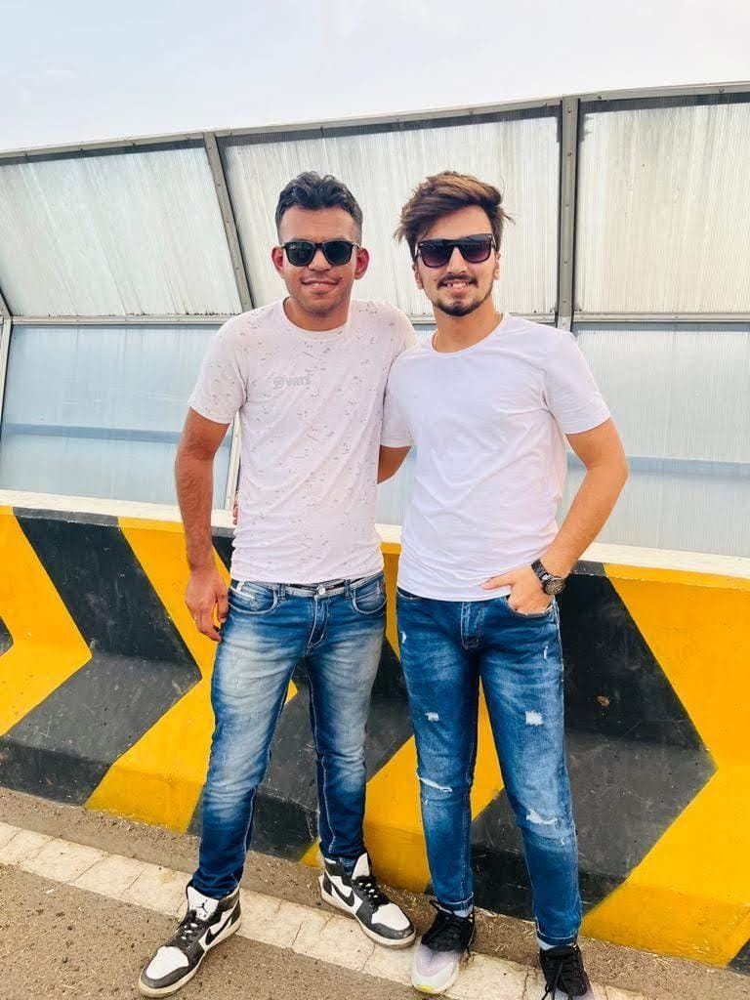
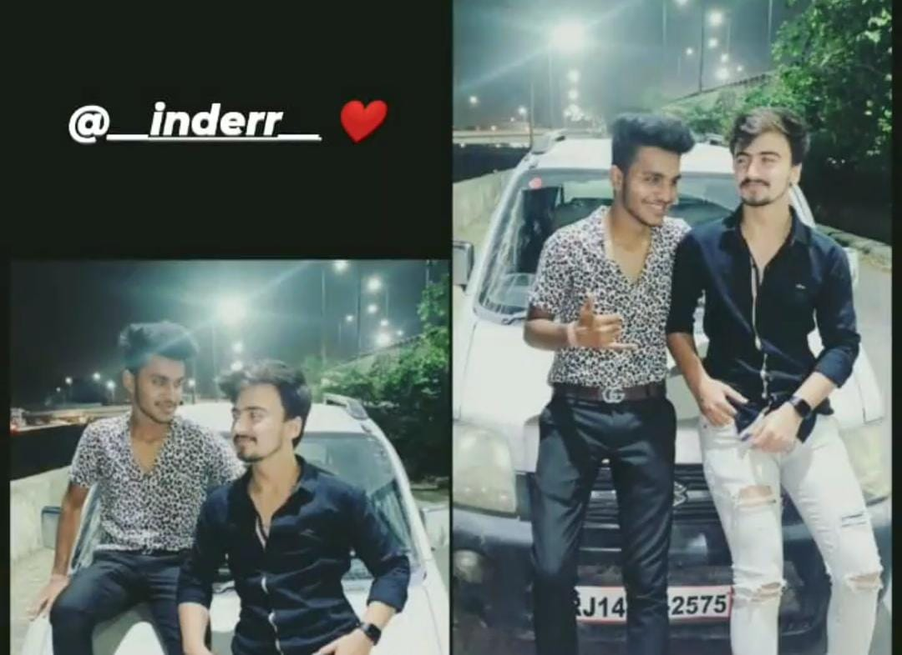

Friends

Quote :
“Happiness can be found even in the darkest of times, if one only remembers to turn on the light.”
“The best and most beautiful things in the world cannot be seen or even touched — they must be felt with the heart.”Questions asked to them and their true replies...
1.One thing you like ?
2.One thing you dislike ?
3.Our greatest Memory ?
4.One Word to describe my personality ?
Answers:
.Nikhil CHAWLA

1. Yaaro ka Yaar hai..
2. Manipulative
3. Humne sath difficulties aur Happiness dono enjoy ki hai..
4. Lala
.Bhavesh Kotwani.
1. I like your counter when you give in the middle of conversation. Sometime I think to give you puppy . And I am glad that you are not back stabbers .
2. Needs to be take more stand for life.
3. Talking of memories we already have so many in our school time as well as coaching.
4. Kind nature
..Priyanka Gajnani..
1. He is Supportive.
2. When he is aggressive.
3. A lot of memories but especially when i fall somewhere.
4. Most Lovable Person
Preseting you are memories